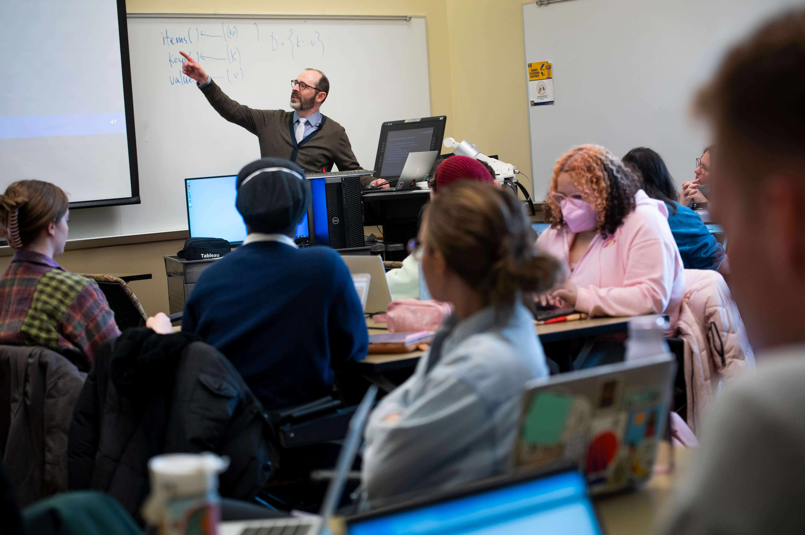
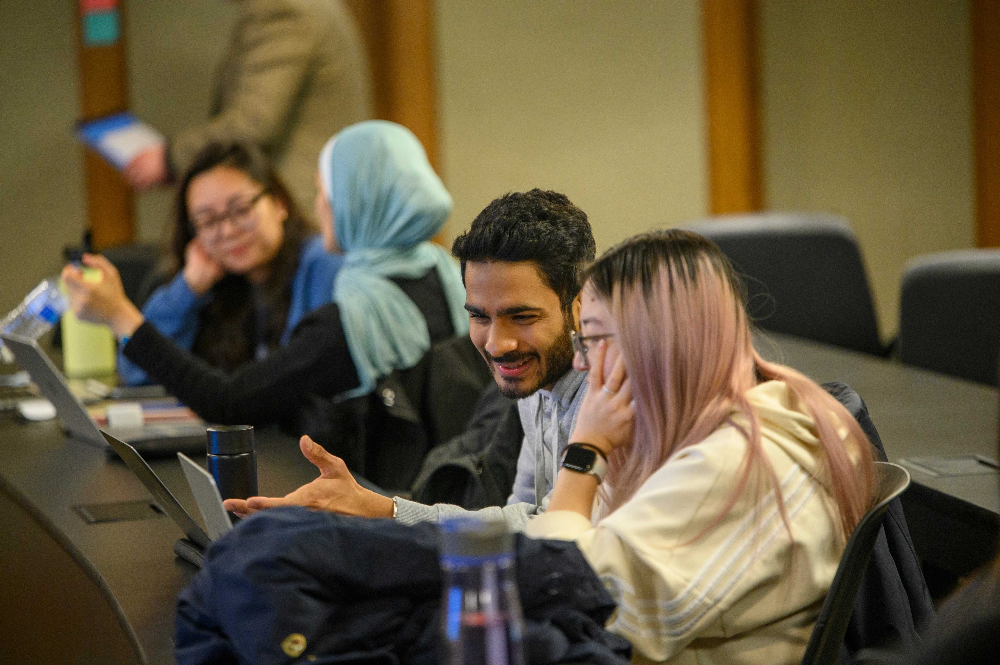

Center for the Education of Women +
At CEW+, we navigate circumstantial barriers by providing academic, financial, and professional support to help you reach your personal potential. Established to support women through higher education, we lift up women and all underserved communities at U-M and beyond. Through career and education counseling, funding, workshops, events, and a diverse, welcoming community, we exist to empower. We are CEW+, and we're here to help you reach your potential.
EVENTS & WORKSHOPS
70th Annual AAUW Used Book Sale
September 6, 2024 8:00 am -
September 8, 2024 3:00 pm
Washtenaw Community College
VIRTUAL | CEW+Inspire Midweek Mindfulness
September 11, 2024
12:15 pm - 12:45 pm
Virtual
Annual Networking Mixer - Join Your Fellow Students
September 20, 2024
5:00 pm - 7:30 pm
Michigan Union, Ann Arbor
NEWS
“Let no one tell her otherwise”: Remembering
May 28, 2024
The family of the late Jane Bloom, M.D., will hold a celebration of life on July 13th, 2024, from 1:00 pm to 4:00 pm at the Eagle Crest Golf Club.
CEW+ Celebrates 2023-24 Graduates
May 15, 2024
On May 2nd, CEW+ marked the end of the term by honoring all the graduating students connected to the Center through scholarships, fellowships, or membership in Michigan Caregivers.
Fall 2024 CEW+ Mentor Program Launches
The CEW+ Mentor Program has officially launched for the Fall 2024 term, connecting students with experienced mentors to support their academic and professional growth. Applications are open until September 30, 2024.